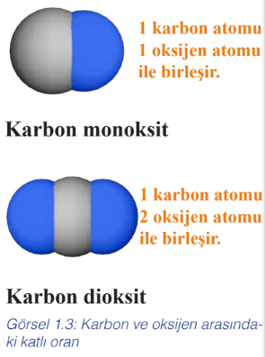
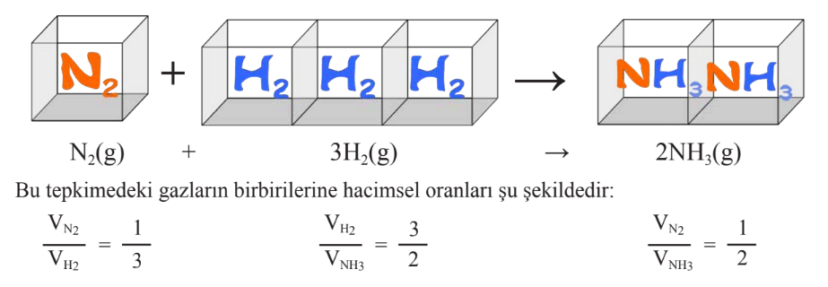

Kimyanın Temel Kanunları
Kütlenin Korunumu Kanunu
Kütlenin korunumu kanunu Antoine Laurent de Lavoisier tarafından ortaya konmuştur.
1774 yılında Lavosier, bir miktar kalay ve hava bulunan cam balonun ağzını kapatarak tartmıştır. Daha sonra kabı ısıtmış ve kalayın beyaz bir toza (SnO) dönüştüğünü görmüştür. Son durumda kabı yeniden tartmış ve kütlenin değişmediğini bulmuştur. Lavoiser yaptığı benzer deneyler sonucunda kütlenin korunumu kanununu ifade etmiştir.
Bir tepkimede tepkimeye giren maddelerin kütleleri toplamı oluşan ürünlerin kütleleri toplamına eşittir. Bu kanuna kütlenin korunumu kanunu denir.
Not: Kütlenin korunumu kanunu nükleer tepkimelerde geçerli değildir.
Sabit Oranlar Kanunu
Fransız kimyacı Joseph Proust, 1797 yılında birçok bileşiğin bileşimi üzerine yaptığı çeşitli gözlemler sonucu bir bileşiğin hangi metotla elde edilirse edilsin elementlerin bileşim oranlarının aynı olduğunu görmüştür. Yaptığı bu gözlemini sabit oranlar kanunu olarak tanımlamıştır.
Katlı Oranlar Kanunu
Katlı oranlar kanunu 1804 yılında John Dalton tarafından ortaya konulmuştur. Bu kanuna göre iki element birden fazla bileşik oluşturuyor ise bu elementlerden herhangi birinin sabit miktarıyla birleşen diğer elementin kütleleri arasında basit tam sayılarla ifade edilebilen bir oran vardır. Bu orana katlı oran denir.
Örneğin karbon ile oksijen elementleri arasında birden fazla bileşik oluşabilir. Bu bileşikler karbon monoksit ve karbon dioksittir. 12 gram karbon elementiyle oluşturulan karbon monoksit bileşiğinde 16 gram oksijen elementi vardır. Aynı miktarda karbon elementiyle oluşturulan karbon dioksit bileşiğinde ise 32 gram oksijen elementi bulunur. O hâlde sabit 12 gram karbon elementi ile birleşen oksijen molekülleri arasında 32/16 = 2/1 oranı vardır. Bu sonuç Dalton Atom Modeli'ne uygundur. Çünkü karbon monoksitte 1 karbon atomuyla 1 oksijen atomu, karbon dioksitte ise 1 karbon atomuyla 2 oksijen atomu birleşir. Karbon dioksitte daima karbon monoksittekinin iki katı kadar oksijen atomu bulunur.

İki bileşik arasında katlı oranlar kanununun aranabilmesi için gereken koşullar şunlardır:
- Bileşik çiftinin aynı elementlerden oluşması gerekir. LiCl – NaCl bileşik çiftinde elementler aynı olmadığı için katlı oran yoktur.
- Bileşik çiftlerindeki element cinsi ikiden fazla olamaz. H2SO4 – H2SO3 ikiden fazla element cinsi içerdiği için bu bileşik çiftinde katlı oran yoktur.
- Bileşik çiftleri arasındaki katlı oran 1 ise katlı oranlar kanunu bu bileşik çiftlerine de uygulanamaz. C2H4 – C3H6 bileşik çifti arasında katlı oran yoktur.
Sabit Hacim Oranları Kanunu
Bu kanuna göre gazlar, belirli basınç ve sıcaklıkta basit hacim oranlarına göre birleşir. Gaz hâlindeki herhangi bir ürünün hacmi ile tepkimeye giren gazlardan herhangi birinin hacmi arasında da tam sayılı basit bir oran vardır. Sabit hacim oranları kanunu, Joseph Gay-Lussac tarafından 1809 yılında ortaya konulmuştur.
Bu kanuna göre azot ve hidrojen gazlarının amonyak gazı oluşturmak için gerçekleştirdiği tepkimede yer alan katsayılar ve hacimler arasındaki bağıntı şöyle ifade edilebilir:
